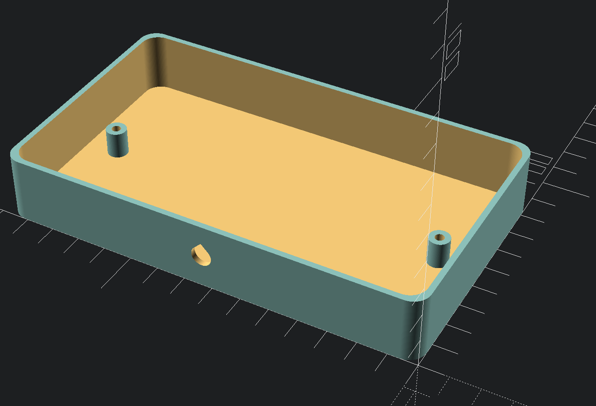

3D printed extension cord
2020-10-11
This week I have nothing new to show about Naminukas. I have been working on rewriting software to make it more maintainable and extendable. Also I was moving my home office to a different place inside the same room and I needed a new extension cord. I had quite a few power cables from old disassembled appliances and new unused wall power socket. So I decided to 3D print the rest and make a DIY extension cord. Here is a result:

The back side:

OpenSCAD is available to download if you would like to make your own. Model looks like this:

- Previously:
- Geranium foam rubber vacuum suction cup
- Read next:
- Medical Robotics for Contagious Diseases Challenge 2020